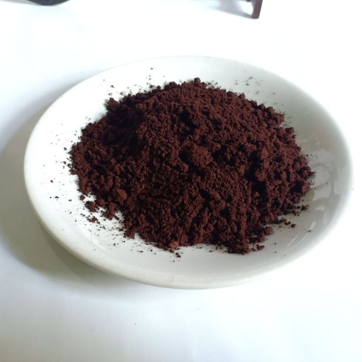

Must-Eat Dishes (Makanan Wajib)

Pa'piong
Daging yang dimasak di dalam bambu dengan bumbu rempah dan daun miana yang gurih.

Pammarrasan
Masakan khas menggunakan kluwek hitam yang memberikan cita rasa kuat dan unik.

Kopi Arabika Toraja
Kopi dengan aroma rempah dan tingkat keasaman yang seimbang.